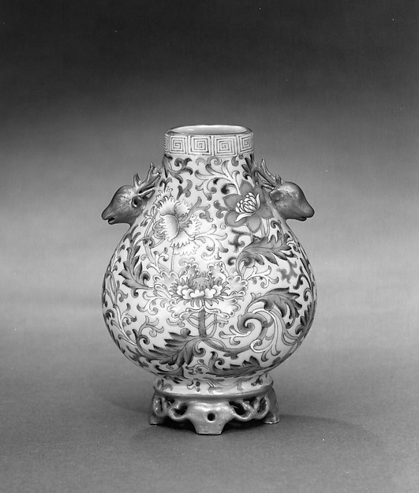

清代是中国陶瓷餐具装饰最为丰富的时代。粉彩、珐琅彩、斗彩、青花、单色釉——每一种釉彩都发展出了独立的纹样体系，从宫廷到民间，从日用器到外销瓷，纹样成为身份、地域和时代的视觉密码。

雍正粉彩牡丹以没骨法绘制，花瓣由胭脂红、粉红到白渐变渲染，层次极为丰富。牡丹为"花王"，寓意富贵。
缠枝莲纹从元明延续至清，但清代线条更细密工整。康熙青花分水技法使莲叶呈现深浅五色层次。
以冰裂纹为地、梅花为主纹，清代独创纹样。"冰梅"谐音"冰媒"，寓意高洁。康熙年间创烧，晚清大量生产。
清代龙纹以五爪为皇帝专用。康熙龙凶猛矫健，雍正龙端庄威严，乾隆龙华丽繁缛，三个时期的龙纹风格差异可作为断代依据。
凤凰居盘心，百鸟围绕飞翔。粉彩的丰富色彩使羽毛层次分明。寓意天下归心、国泰民安。
取材元杂剧《西厢记》，碗身绘张生与崔莺莺相见场景。清代粉彩人物画工极细，服饰纹理清晰可辨。
八位仙人各执法器渡海，画面动感强烈。八仙纹在清代餐具中极受欢迎，"暗八仙"（仅绘法器）则更含蓄。
碗壁四个圆形开光内各书一字——"万""寿""无""疆"，开光之间以缠枝莲纹连接。为乾隆祝寿特制。
碗身满书不同字体的"福"字，与蝙蝠纹交替排列（蝠谐音"福"），整体纹饰繁密而有序。